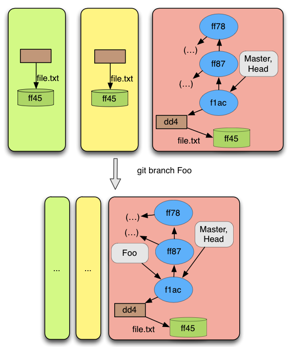

Description
Branches in git are very efficient. This happens because a branch in Git is just a pointer to a commit. So, when a branch is created or removed there is only a new pointer created or a pointer that is removed. As we will see later, there are some restrictions when removing branches. When we are referring to creating or removing a branch, we mean the operations git branch and git branch -d.
Pre-conditions
When creating a branch there are only two restrictions :
Some commit must exist, and consequently the HEAD reference must point to some commit;
There is not any branch with the same name.
The second pre-condition is kind of obvious. We cannot create a branch with the same name as one already in the repository, otherwise we would have conflicts. The pre-condition that could bring some doubts is the first one. Git does not allow the creation of branches before the first commit is done. When the first commit is done, a branch called "master" is created and after that it is possible to create as many branches as the user wishes.
When removing a branch there are also some restrictions:
The branch exists;
The HEAD is not identifying the branch;
The commit pointed by the branch is accessible from the current commit (the commit pointed by the branch identified by the HEAD).
The first pre-conditions says that it is only possible to remove a branch if it exists. The second says, that the branch being removed is not the one identified by HEAD, otherwise the HEAD would point from now on to some branch that does not exists anymore. Thus, there would not exist a current commit. The last pre-condition exists to enforce that the user does not deletes a branch that is not yet merged with the current branch, or in other words, the user does not delete a branch that is not accessible from the current commit, through the parent relation. If this pre-condition did not exist it would be possible to loose all commits only accessible from this branch.
Result
The result of performing this operations are the expected. When creating a branch, the result is a new branch pointing to the same commit as the branch identified by the HEAD. When removing a branch, the result is that the removed branch does not exists anymore.
Examples
As we wrote before, the changes of creating a branch are minimal. The only thing changing in the repository is the new branch pointing to the current commit, as can be seen in Figure 11
When removing a branch the changes are also minimal. The only thing changing in the repository is that the branch referred must be deleted. If instead of looking at Figure 11 from top to bottom, we look at it from bottom to top, it shows the case when a branch is removed.
 Figure 11